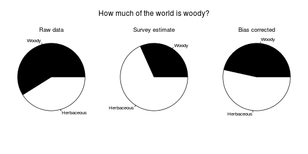

How much of the world is woody?
Richard G. FitzJohn, Matthew W. Pennell, Amy E. Zanne, Peter F. Stevens, David C. Tank, William K. Cornwell
This is the full analysis that underlies our paper.
Preliminaries
Ensure that you have all the required packages installed by running
make deps
Before running this script, be sure to have the required data in
place. If you have make installed, this can be done by running
make data-processed
at the command line. See README.md for more details.
See the file data/README.md for more information about the data
that we use, and alternative ways of running things if you don't
have make installed.
library(diversitree)
## Loading required package: deSolve
## Loading required package: ape
## Loading required package: subplex
## Loading required package: Rcpp
source("R/load.R")
source("R/util.R")
Colours used throughout:
cols.methods <- c(binomial="#a63813",
hypergeometric="#4d697f")
cols.tree <- c(Monilophytes="#a63813",
Gymnosperms="#21313b",
BasalAngiosperms="#eeb911",
Monocots="#204d14",
Eudicots="#4d697f",
Rest="gray15")
cols.woody <- c(Woody="#533d0c",
Herbaceous="#799321")
cols.woody <- c(Woody="black",
Herbaceous="white")
cols.shading <- "#eeb911"
cols.tropical <- c(tropical="#ea7518",
temperate="#62a184")
The 'load.woodiness.data.genus' function hides a reasonable amount of data cleaning required to load the data. This mostly involves matching the woodiness data set from Zanne et al. to our species list (derived from The Plant List), cleaning up synonomies, and then collapsing down to genus.
The final object has columns
- genus, family, order – taxonomic information
- W, V, H – number of species scored as woody, variable, herbaceous (respectively)
- N – number of species in the genus
- K – number of species with known state, after dropping all “variable” species
- p – fraction of known species that are woody, after dropping all “variable” species
dat.g <- load.woodiness.genus()
Imputing the state of missing species
For each genus:
A. If the genus has a valid fraction of species (i.e. K > 0 so p is defined), then sample the number of species that are woody from either
- the binomial distribution (strong prior; assuming known species were sampled with replacement from the pool of species); or
- the hypergeometric distribution (weak prior; assuming that known species were sampled without replacement from the pool of species).
B. If the genus has no valid fraction of species (i.e., K == 0 so p is undefined), then sample from the emperical distribution of per-genus fractions. We're going to feed data into this by taxonomic order, so this will come from the per-order distribution.
sim <- function(x, nrep, with.replacement=TRUE, p=1/20) {
## First, focus on cases where we have a valid estimate of the
## fraction of species that are woody (i.e., at least one known
## species).
ok <- !is.na(x$p)
w <- matrix(NA, nrow(x), nrep)
## A: genera with any known species
if (with.replacement)
w[ok,] <- x$W[ok] + rbinom(sum(ok), x$N[ok]-x$K[ok], x$W[ok]/x$K[ok])
else
w[ok,] <- t(sapply(which(ok), function(i)
rhyper2(nrep, x$H[i], x$W[i], x$N[i])))
## B: genera with no known species
n.unk <- sum(!ok)
w[!ok,] <- apply(w[ok,,drop=FALSE] / x$N[ok], 2, function(y)
rbinom(n.unk, x$N[!ok], quantile(y, runif(n.unk))))
rownames(w) <- x$genus
summarise.sim(w, x[c("order", "family", "genus",
"W", "V", "H", "N", "K")])
}
This collects up the results at different taxonomic levels.
summarise <- function(x, p=1/20)
structure(c(mean(x), quantile(x, c(p/2, 1-p/2))),
names=c("mean", "lower", "upper"))
summarise.sim <- function(w, info) {
order <- info$order[[1]]
info.cols <- c("W", "V", "H", "N", "K")
## Genus is easy;
w.g <- cbind(info, t(apply(w, 1, summarise)))
## Family is a pain:
w.f <- do.call(rbind,
lapply(split(as.data.frame(w), info$family), colSums))
w.f <- t(apply(w.f, 1, summarise))
w.f <- data.frame(order=order,
aggregate(info[info.cols], info["family"], sum),
w.f, stringsAsFactors=TRUE)
rownames(w.f) <- NULL
## Order is easy; we are guaranteed to have just one order here, so:
w.o <- data.frame(order=order,
as.data.frame(t(colSums(info[info.cols]))),
t(summarise(colSums(w))), stringsAsFactors=FALSE)
ret <- list(genus=w.g, family=w.f, order=w.o)
attr(ret, "total") <- colSums(w)
ret
}
rhyper2 <- function(nn, s0, s1, xn, fraction=FALSE) {
x1 <- seq(s1, xn - s0)
x0 <- xn - x1
p1 <- dhyper(s1, x1, x0, s0+s1)
p1 <- p1 / sum(p1)
x1[sample(length(p1), nn, TRUE, p1)]
}
do.simulation <- function(dat.g, nrep, with.replacement) {
f <- function(level) {
ret <- do.call(rbind, lapply(res, "[[", level))
rownames(ret) <- NULL
ret[c("p.mean", "p.lower", "p.upper")] <-
ret[c("mean", "lower", "upper")] / ret[["N"]]
ret
}
res <- lapply(split(dat.g, dat.g$order),
sim, nrep, with.replacement)
total <- rowSums(sapply(res, attr, "total"))
overall <- summarise(total)
overall.p <- overall / sum(dat.g$N)
list(genus=f("genus"), family=f("family"), order=f("order"),
overall=overall, overall.p=overall.p, total=total)
}
set.seed(1)
res.b <- do.simulation(dat.g, 1000, TRUE) # binomial - with replacement
res.h <- do.simulation(dat.g, 1000, FALSE) # hypergeometric - without
Repeat this sampling proceedure under a more extreme classification; all variable species scored as woody:
dat.g.w <- load.woodiness.genus(extreme="woody")
res.b.w <- do.simulation(dat.g.w, 1000, TRUE) # binomial & woody
res.h.w <- do.simulation(dat.g.w, 1000, FALSE) # hypergeometric & woody
…and with all variable species scored as herbaceous:
dat.g.h <- load.woodiness.genus(extreme="herbaceous")
res.b.h <- do.simulation(dat.g.h, 1000, TRUE) # binomial & herby
res.h.h <- do.simulation(dat.g.h, 1000, FALSE) # hypergeometric & herby
Distribution of estimates of woodiness
This is the raw distribution; i.e., our estimate of the fraction of species that are woody and its estimate.
fig.distribution.raw <- function(res.b, res.h) {
n.spp <- sum(res.b$order$N)
p.b <- res.b$total / n.spp * 100
p.h <- res.h$total / n.spp * 100
r <- range(p.b, p.h)
br <- seq(r[1], r[2], length.out=30)
h.b <- hist(p.b, br, plot=FALSE)
h.h <- hist(p.h, br, plot=FALSE)
xlim <- c(42, 50)
ylim <- range(h.b$density, h.h$density)
cols <- cols.methods
op <- par(mar=c(4.1, 4.1, .5, .5))
on.exit(par(op))
plot(h.b, col=cols[1], xlim=xlim, ylim=ylim, freq=FALSE, yaxt="n",
ylab="",
xlab="Percentage of woody species among all vascular plants",
main="")
box(bty="l")
lines(h.h, col=cols[2], freq=FALSE)
mtext("Probability density", 2, line=.5)
}
fig.distribution.raw(res.b, res.h)

Next, expand that plot to include the more extreme estimates (variable species as woody and variable species as herbaceous). This shows how much the classification errors affect the analysis.
fig.distribution.raw.errors <- function(res.b, res.h,
res.b.w, res.h.w,
res.b.h, res.h.h) {
n.spp <- sum(res.b$order$N)
res <- list(b =res.b, h =res.h,
b.w=res.b.w, h.w=res.h.w,
b.h=res.b.h, h.h=res.h.h)
p <- lapply(res, function(x) x$total / n.spp * 100)
r <- range(unlist(p))
br <- seq(r[1], r[2], length.out=30)
h <- lapply(p, hist, br, plot=FALSE)
xlim <- c(42, 50)
ylim <- range(unlist(lapply(h, function(x) x$density)))
cols <- cols.methods
cols.fill <- mix(cols, "white", 0.5)
op <- par(mar=c(1.1, 0.5, .5, .5), mfrow=c(2, 1), oma=c(3.1, 2, 0, 0))
on.exit(par(op))
plot(NA, xlim=xlim, ylim=ylim, xaxt="n", yaxt="n", bty="l",
xlab="", ylab="", main="")
axis(1, labels=FALSE)
for (i in c(3, 5))
hist.fill(h[[i]], border=cols[[1]], col=cols.fill[[1]])
lines(h[["b"]], col=cols[1], freq=FALSE)
label(.02, .96, 1)
plot(NA, xlim=xlim, ylim=ylim, xaxt="n", yaxt="n", bty="l",
xlab="", ylab="", main="")
axis(1, labels=TRUE)
for (i in c(4, 6))
hist.fill(h[[i]], border=cols[[2]], col=cols.fill[[2]])
lines(h[["h"]], col=cols[2], freq=FALSE)
mtext("Probability density", 2, line=.5, outer=TRUE)
mtext("Percentage of woody species among all vascular plants", 1,
line=2.5, xpd=NA)
label(.02, .96, 2)
}
fig.distribution.raw.errors(res.b, res.h, res.b.w, res.h.w, res.b.h, res.h.h)

Woodiness is structured among genera and other taxonomic groups. Make a plot of per genus/family/order estimates of woodiness:
fig.fraction.by.group <- function(res.b, res.h, dat.g, level="genus") {
op <- par(mfrow=c(2, 1), mar=c(2, 2, .5, .5), oma=c(2, 0, 0, 0))
on.exit(par(op))
lwd <- 1.5
n.br <- c(genus=50, family=40, order=30)[[level]]
tmp <- aggregate(dat.g[c("W", "K")], dat.g[level], sum)
tmp <- tmp[tmp$K >= 10,] # at least 10 records per group
h <- hist(100 * tmp$W / tmp$K, n.br, plot=FALSE)
plot(NA, xlim=c(0, 100), ylim=range(0, h$density),
xaxt="n", yaxt="n", bty="l", xlab="", ylab="")
mtext("Probability density", 2, line=.5)
axis(1, tick=TRUE, label=FALSE)
label(.02, .96, 1)
hist.outline(h, col="black", lwd=lwd)
cols <- cols.methods
x.b <- res.b[[level]]
x.h <- res.h[[level]]
h.b <- hist(100*x.b$p.mean[x.b$N >= 10], n=n.br, plot=FALSE)
h.h <- hist(100*x.h$p.mean[x.h$N >= 10], n=n.br, plot=FALSE)
ylim <- range(h.b$density, h.h$density)
plot(NA, xlim=c(0, 100), ylim=ylim,
xlab="", ylab="", yaxt="n", bty="n", bty="l")
mtext("Probability density", 2, line=.5)
mtext(paste("Percentage of woody species in", level), 1, outer=TRUE,
line=.5)
hist.outline(h.b, col=cols[1], lwd=lwd)
hist.outline(h.h, col=cols[2], lwd=lwd)
legend("topleft", c("Strong prior (binomial)",
"Weak prior (hypergeometric)"),
col=cols, lty=1, bty="n", cex=.85, inset=c(.1, 0), lwd=lwd)
label(.02, .96, 2)
}
fig.fraction.by.group(res.b, res.h, dat.g, "genus")

fig.fraction.by.group(res.b, res.h, dat.g, "family")

fig.fraction.by.group(res.b, res.h, dat.g, "order")

Woodiness also varies over the tree; plot the per-order estimate of
woodiness around the tree (the code to do this is not very pretty,
so is kept separately in R/plot-tree.R)
source("R/plot-tree.R")
Phylogeny at the level of order:
phy.o <- load.phylogeny.order()
fig.fraction.on.phylogeny(phy.o, res.b)

fig.fraction.on.phylogeny(phy.o, res.h)

Survey:
Raw results of the survey:
d.survey <- load.survey()
Convert estimates to normal using logit transformation:
d.survey$Estimate.logit <- boot::logit(d.survey$Estimate / 100)
Model with training and familiarity as factors:
res <- lm(Estimate.logit ~ Training + Familiarity, d.survey)
summary(res)
##
## Call:
## lm(formula = Estimate.logit ~ Training + Familiarity, data = d.survey)
##
## Residuals:
## Min 1Q Median 3Q Max
## -3.816 -0.495 0.016 0.607 2.976
##
## Coefficients:
## Estimate Std. Error t value Pr(>|t|)
## (Intercept) -1.0674 0.1105 -9.66 < 2e-16 ***
## Training.L 0.3632 0.2305 1.58 0.11634
## Training.Q 0.0544 0.1733 0.31 0.75397
## Training.C 0.2069 0.1588 1.30 0.19370
## Training^4 -0.3203 0.1656 -1.93 0.05415 .
## Familiarity.L -1.0419 0.3076 -3.39 0.00081 ***
## Familiarity.Q -0.2420 0.2109 -1.15 0.25227
## Familiarity.C -0.0660 0.1326 -0.50 0.61892
## ---
## Signif. codes: 0 '***' 0.001 '**' 0.01 '*' 0.05 '.' 0.1 ' ' 1
##
## Residual standard error: 0.982 on 277 degrees of freedom
## (7 observations deleted due to missingness)
## Multiple R-squared: 0.0656, Adjusted R-squared: 0.042
## F-statistic: 2.78 on 7 and 277 DF, p-value: 0.00826
anova(res)
## Analysis of Variance Table
##
## Response: Estimate.logit
## Df Sum Sq Mean Sq F value Pr(>F)
## Training 4 5.8 1.46 1.51 0.1990
## Familiarity 3 12.9 4.32 4.47 0.0044 **
## Residuals 277 267.3 0.97
## ---
## Signif. codes: 0 '***' 0.001 '**' 0.01 '*' 0.05 '.' 0.1 ' ' 1
Regression against |latitude|:
res.lat <- lm(Estimate.logit ~ abs(Lat), d.survey)
anova(res.lat)
## Analysis of Variance Table
##
## Response: Estimate.logit
## Df Sum Sq Mean Sq F value Pr(>F)
## abs(Lat) 1 5 4.96 5.12 0.024 *
## Residuals 280 271 0.97
## ---
## Signif. codes: 0 '***' 0.001 '**' 0.01 '*' 0.05 '.' 0.1 ' ' 1
summary(res.lat)
##
## Call:
## lm(formula = Estimate.logit ~ abs(Lat), data = d.survey)
##
## Residuals:
## Min 1Q Median 3Q Max
## -3.854 -0.588 0.124 0.566 3.168
##
## Coefficients:
## Estimate Std. Error t value Pr(>|t|)
## (Intercept) -0.65407 0.13105 -4.99 1.1e-06 ***
## abs(Lat) -0.00804 0.00355 -2.26 0.024 *
## ---
## Signif. codes: 0 '***' 0.001 '**' 0.01 '*' 0.05 '.' 0.1 ' ' 1
##
## Residual standard error: 0.985 on 280 degrees of freedom
## (10 observations deleted due to missingness)
## Multiple R-squared: 0.018, Adjusted R-squared: 0.0144
## F-statistic: 5.12 on 1 and 280 DF, p-value: 0.0244
Here is the fitted result:
plot(Estimate.logit ~ abs(Lat), d.survey)
abline(res.lat)

As a categorical tropical/non-tropical variable:
res.tro <- lm(Estimate.logit ~ Tropical, d.survey)
anova(res.tro)
## Analysis of Variance Table
##
## Response: Estimate.logit
## Df Sum Sq Mean Sq F value Pr(>F)
## Tropical 1 5.4 5.39 5.57 0.019 *
## Residuals 280 271.0 0.97
## ---
## Signif. codes: 0 '***' 0.001 '**' 0.01 '*' 0.05 '.' 0.1 ' ' 1
summary(res.tro)
##
## Call:
## lm(formula = Estimate.logit ~ Tropical, data = d.survey)
##
## Residuals:
## Min 1Q Median 3Q Max
## -3.883 -0.539 0.164 0.606 3.209
##
## Coefficients:
## Estimate Std. Error t value Pr(>|t|)
## (Intercept) -1.0116 0.0704 -14.36 <2e-16 ***
## TropicalTRUE 0.2992 0.1268 2.36 0.019 *
## ---
## Signif. codes: 0 '***' 0.001 '**' 0.01 '*' 0.05 '.' 0.1 ' ' 1
##
## Residual standard error: 0.984 on 280 degrees of freedom
## (10 observations deleted due to missingness)
## Multiple R-squared: 0.0195, Adjusted R-squared: 0.016
## F-statistic: 5.57 on 1 and 280 DF, p-value: 0.019
Distribution of estimates vs different levels of botanical familiarity and education, with the estimates from the database overlaid.
fig.survey.results <- function(d.survey, res.b, res.h) {
ci <- 100*cbind(res.b$overall.p, res.h$overall.p)
cols <- cols.methods
cols.tr <- diversitree:::add.alpha(cols, .5)
op <- par(no.readonly=TRUE)
on.exit(par(op))
layout(rbind(1:2), widths=c(4, 5))
par(mar=c(6.5, 2, .5, .5), oma=c(0, 2, 0, 0))
plot(Estimate ~ Familiarity, d.survey, col=cols.shading, axes=FALSE,
xlab="", ylab="", bty="l",
ylim=c(0, 100))
axis(2, las=1)
text(1:4, -5, levels(d.survey$Familiarity),
srt=-55, xpd=NA, adj=c(0, NA), cex=.85)
mtext("Estimate of percentage woodiness", 2, line=2.75)
label(.02, .96, 1)
usr <- par("usr")
rect(usr[1], ci["lower",], usr[2], ci["upper",], col=cols.tr,
border=NA)
abline(h=ci["mean",], col=cols)
plot(Estimate ~ Training, d.survey, col=cols.shading, axes=FALSE,
xlab="", ylab="", bty="l", ylim=c(0, 100))
axis(2, las=1)
xl <- c("Postgrad","Part postgrad","Undergrad","Part undergrad", "None")
text(1:5, -5, xl,
srt=-55, xpd=TRUE, adj=c(0, NA), cex=.85)
label(.02, .96, 2)
usr <- par("usr")
rect(usr[1], ci["lower",], usr[2], ci["upper",], col=cols.tr,
border=NA)
abline(h=ci["mean",], col=cols)
}
fig.survey.results(d.survey, res.b, res.h)

And the raw distribution of survey results, showing the general tendency for relatively low estimates, again overlaid with the estimates from the database:
fig.survey.distribution <- function(d.survey, res.b, res.h) {
op <- par(mfrow=c(2, 1), mar=c(2, 4, .5, .5), oma=c(2, 0, 0, 0))
on.exit(par(op))
lwd <- 1.5
ci <- 100*cbind(res.b$overall.p, res.h$overall.p)
hist(d.survey$Estimate, xlim=c(0, 100), las=1, col=cols.shading,
xaxt="n", xlab="", ylab="Number of responses", main="")
box(bty="l")
axis(1, label=FALSE)
label(.02, .96, 1)
usr <- par("usr")
rect(ci["lower",], usr[3], ci["upper",], usr[4],
col=diversitree:::add.alpha(cols.methods, .5), border=NA)
abline(v=ci["mean",], col=cols.methods)
h.tropical <- hist(d.survey$Estimate[d.survey$Tropical], plot=FALSE)
h.temperate <- hist(d.survey$Estimate[!d.survey$Tropical], plot=FALSE)
ylim <- range(h.tropical$counts, h.temperate$counts)
plot(NA, xlim=c(0, 100), ylim=ylim, las=1, xlab="",
ylab="Number of responses", bty="n", bty="l")
mtext("Estimate of percentage woodiness", 1, outer=TRUE, line=.5)
hist.outline(h.tropical, col=cols.tropical[1], lwd=lwd, density=FALSE)
hist.outline(h.temperate, col=cols.tropical[2], lwd=lwd, density=FALSE)
usr <- par("usr")
rect(ci["lower",], usr[3], ci["upper",], usr[4],
col=diversitree:::add.alpha(cols.methods, .5), border=NA)
abline(v=ci["mean",], col=cols.methods)
label(.02, .96, 2)
legend("topright", c("Tropical", "Temperate"), lwd=lwd,
col=cols.tropical, bty="n", cex=.75)
}
fig.survey.distribution(d.survey, res.b, res.h)

Variability of a genus vs size
These plots look at the how variable a genus is vs its size (left column) or the number of species in a known state (right column). The top row looks at how variable the genus is (a single type or a mixed type), the middle row at the probability that a genus is varaible. The bottom row looks at the proportion of species that are woody in a genus vs its size, testing if woody genera are relatively larg or relatively small (woody genera are relatively smaller).
fig.variability <- function(dat.g) {
dat.g$p.rare <- (0.5 - abs(dat.g$p - 1/2)) * 2
dat.g$variable <- dat.g$p.rare > 0
sub <- dat.g[!is.nan(dat.g$p),]
## Breaks for the moving average:
br.N <- log.seq.range(sub$N, 20)
br.K <- log.seq.range(sub$K, 15)
## Classify points:
i.N <- findInterval(sub$N, br.N, all.inside=TRUE)
i.K <- findInterval(sub$K, br.K, all.inside=TRUE)
## Midpoints for plotting.
mid.N <- (br.N[-1] + br.N[-length(br.N)])/2
mid.K <- (br.K[-1] + br.K[-length(br.K)])/2
m.N <- tapply(sub$p.rare, i.N, mean)
m.K <- tapply(sub$p.rare, i.K, mean)
p.N <- tapply(sub$variable, i.N, mean)
p.K <- tapply(sub$variable, i.K, mean)
f.N <- tapply(sub$p, i.N, mean)
f.K <- tapply(sub$p, i.K, mean)
pch <- 19
cex <- 0.5
col <- "#00000066"
op <- par(oma=c(4.1, 4.1, 0, 0),
mar=c(1.1, 1.1, .5, .5),
mfrow=c(3, 2))
plot(p.rare ~ N, sub, pch=pch, cex=cex, col=col, log="x",
axes=FALSE)
lines(m.N ~ mid.N, col="red")
axis(1, labels=FALSE)
axis(2, c(0, 1), c("Single type", "50:50"), las=1)
mtext("Variability", 2, 3)
box(bty="l")
label(.02, .96, 1)
plot(p.rare ~ K, sub, pch=pch, cex=cex, col=col, log="x",
axes=FALSE)
lines(m.K ~ mid.K, col="red")
axis(1, labels=FALSE)
axis(2, c(0, 1), labels=FALSE)
box(bty="l")
label(.02, .96, 2)
plot(variable ~ N, sub, pch=pch, cex=cex, col=col, log="x",
bty="l", las=1, axes=FALSE)
lines(p.N ~ mid.N, col="red")
axis(1, labels=FALSE)
axis(2, las=1)
mtext("Probability genus is variable", 2, 3)
box(bty="l")
label(.02, .96, 3)
plot(variable ~ K, sub, pch=pch, cex=cex, col=col, log="x",
bty="l", yaxt="n", las=1, axes=FALSE)
lines(p.K ~ mid.K, col="red")
axis(1, labels=FALSE)
axis(2, labels=FALSE)
box(bty="l")
label(.02, .96, 4)
plot(p ~ N, sub, pch=pch, cex=cex, col=col, log="x",
bty="l", las=1)
lines(f.N ~ mid.N, col="red")
mtext("Number of species in genus", 1, 3)
mtext("Proportion of species woody", 2, 3)
label(.02, .96, 5)
plot(p ~ K, sub, pch=pch, cex=cex, col=col, log="x",
bty="l", yaxt="n", las=1)
lines(f.K ~ mid.K, col="red")
axis(2, labels=FALSE)
mtext("Number of species with known state", 1, 3)
label(.02, .96, 6)
}
fig.variability(dat.g)

Write out partly processed data sets
To save having to rerun everything, these are the estimates by genus, family and order for the two different sampling approaches and the three different treatment of variable species (so 3 x 2 x 3 = 18 files)
write.output <- function(d, type) {
for (tax in c("genus", "family", "order"))
write.csv(d[[tax]],
file.path("output/results", sprintf("%s-%s.csv", tax, type)),
row.names=FALSE)
}
Core data sets:
dir.create("output/results", FALSE)
write.output(res.b, "binomial-strong-prior")
write.output(res.h, "hypergeometric-weak-prior")
Extra data sets:
write.output(res.b.w, "binomial-strong-prior-wood-biased")
write.output(res.h.w, "hypergeometric-weak-prior-wood-biased")
write.output(res.b.h, "binomial-strong-prior-herb-biased")
write.output(res.h.h, "hypergeometric-weak-prior-herb-biased")
Meta data for interpreting these files.
metadata <-
list(order="Taxonomic order",
family="Taxonomic family",
genus="Taxonomic genus",
W="Number of species known to be woody",
V="Number of species known to be variable",
H="Number of species known to be herbaceous",
N="Estimate of the number of species in the genus/family/order",
K="Number of species with known state (W + H)",
mean="Mean estimated number of woody species",
lower="0.025 quantile of estimated number of woody species",
upper="0.975 quantile of estimated number of woody species",
p.mean="Mean estimated fration of woody species",
p.lower="0.025 quantile of estimated fraction of woody species",
p.upper="0.975 quantile of estimated fraction of woody species")
metadata <- data.frame(column=names(metadata),
description=unlist(metadata),
stringsAsFactors=FALSE)
write.csv(metadata, "output/results/metadata.csv", row.names=FALSE)
Graphical abstract:
fig.graphical.abstract <- function(res.b, res.h, dat.g, d.survey) {
p.raw <- sum(dat.g$W) / sum(dat.g$K)
p.survey <- mean(d.survey$Estimate) / 100
p.data <- mean(c(res.b$overall.p[["mean"]], res.h$overall.p[["mean"]]))
f <- function(p, title) {
pie(c(p, 1-p), c("Woody", "Herbaceous"), col=cols.woody)
text(0, par("usr")[2], title, adj=c(0.5, 0), cex=1.2)
}
par(mfrow=c(1, 3), mar=rep(1, 4))
f(p.raw, "Raw data")
f(p.survey, "Survey estimate")
text(0, 1.5, "How much of the world is woody?", cex=1.5, xpd=NA)
f(p.data, "Bias corrected")
}
fig.graphical.abstract(res.b, res.h, dat.g, d.survey)

Produce PDF versions of figures for publication:
if (!interactive()) {
to.pdf("doc/figs/fraction-by-genus.pdf", 6, 6,
fig.fraction.by.group(res.b, res.h, dat.g, "genus"))
to.pdf("doc/figs/fraction-by-family.pdf", 6, 6,
fig.fraction.by.group(res.b, res.h, dat.g, "family"))
to.pdf("doc/figs/fraction-by-order.pdf", 6, 6,
fig.fraction.by.group(res.b, res.h, dat.g, "order"))
to.pdf("doc/figs/fraction-on-phylogeny.pdf", 6, 6,
fig.fraction.on.phylogeny(phy.o, res.b))
to.pdf("doc/figs/fraction-on-phylogeny-supp.pdf", 6, 6,
fig.fraction.on.phylogeny(phy.o, res.h))
to.pdf("doc/figs/distribution-raw.pdf", 6, 4,
fig.distribution.raw(res.b, res.h))
to.pdf("doc/figs/distribution-raw-errors.pdf", 6, 4,
fig.distribution.raw.errors(res.b, res.h, res.b.w, res.h.w,
res.b.h, res.h.h))
to.pdf("doc/figs/survey-results.pdf", 6, 4,
fig.survey.results(d.survey, res.b, res.h))
to.pdf("doc/figs/survey-distribution.pdf", 6, 5,
fig.survey.distribution(d.survey, res.b, res.h))
to.pdf("doc/figs/variability.pdf", 7, 8,
fig.variability(dat.g))
to.pdf("doc/figs/graphical-abstract.pdf", 7, 3.5,
fig.graphical.abstract(res.b, res.h, dat.g, d.survey))
}
## Creating doc/figs/fraction-by-genus.pdf
## Creating doc/figs/fraction-by-family.pdf
## Creating doc/figs/fraction-by-order.pdf
## Creating doc/figs/fraction-on-phylogeny.pdf
## Creating doc/figs/fraction-on-phylogeny-supp.pdf
## Creating doc/figs/distribution-raw.pdf
## Creating doc/figs/distribution-raw-errors.pdf
## Creating doc/figs/survey-results.pdf
## Creating doc/figs/survey-distribution.pdf
## Creating doc/figs/variability.pdf
## Creating doc/figs/graphical-abstract.pdf
Version information:
sessionInfo()
## R version 3.1.0 (2014-04-10)
## Platform: x86_64-pc-linux-gnu (64-bit)
##
## locale:
## [1] LC_CTYPE=en_US.UTF-8 LC_NUMERIC=C
## [3] LC_TIME=en_US.UTF-8 LC_COLLATE=en_US.UTF-8
## [5] LC_MONETARY=en_US.UTF-8 LC_MESSAGES=en_US.UTF-8
## [7] LC_PAPER=en_US.UTF-8 LC_NAME=C
## [9] LC_ADDRESS=C LC_TELEPHONE=C
## [11] LC_MEASUREMENT=en_US.UTF-8 LC_IDENTIFICATION=C
##
## attached base packages:
## [1] stats graphics grDevices utils datasets methods base
##
## other attached packages:
## [1] diversitree_0.9-7 Rcpp_0.11.1 subplex_1.1-3 ape_3.1-2
## [5] deSolve_1.10-8 knitr_1.6
##
## loaded via a namespace (and not attached):
## [1] boot_1.3-11 codetools_0.2-8 digest_0.6.4 evaluate_0.5.5
## [5] formatR_0.10 grid_3.1.0 lattice_0.20-29 nlme_3.1-117
## [9] stringr_0.6.2 tools_3.1.0